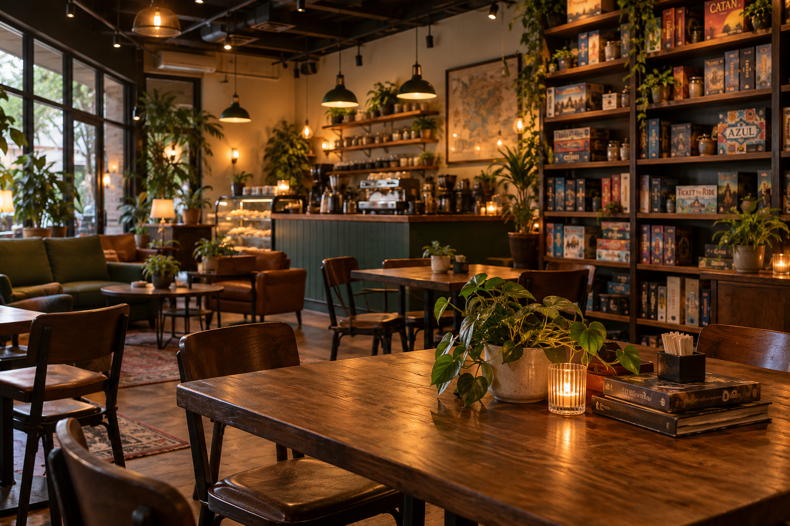

Hours
| Monday | 7:00 AM to 9:00 PM |
| Tuesday | CLOSED |
| Wednesday | 7:00 AM to 9:00 PM |
| Thursday | 7:00 AM to 9:30 PM |
| Friday | 7:00 AM to 10:00 PM |
| Saturday | 8:00 AM to 10:00 PM |
| Sunday | 10:00 AM to 6:00 PM |
Yes, we're really closed on Tuesdays. That's our day for deep cleaning, inventory, and staff training.
Find us
17 Lantern Lane
Juniper Falls, TX 71234
Phone: (555) 013-7712
Email: hello@sidequestcoffee.example
Come for coffee, stay for a game
Side Quest Coffee Co. is a real neighborhood coffee shop. We also have shelves of board games, card games, dice, and chess sets, and a big community table in the middle of the room. Plenty of people come in for a coffee and end up staying two hours, playing something with people they just met.
You don't need to be a board-game person. Some of our customers play every week. Some haven't played anything since Monopoly when they were ten. Both are welcome, and so are remote workers, regulars, parents, and people meeting for business.

Popular menu items
| Item | Price |
|---|---|
| Drip coffee | $3.25 |
| Cold brew | $4.50 |
| Maple latte | $5.25 |
| Chai latte | $4.75 |
| Cinnamon roll | $4.00 |
| Egg and cheddar breakfast sandwich | $6.50 |
| Soft pretzel with mustard | $5.50 |
Weekly and monthly events
Open Table Thursday
Every Thursday, 6:30 to 9:30 PM. Bring your own game or grab one from our shelves. Coming alone is completely fine.
Chess & Coffee
Every Sunday, 11:00 AM to 1:00 PM. Casual play. You do not have to be good at chess.
Learn-a-Game Night
First Wednesday of each month, 7:00 to 8:30 PM. A staff member picks a game and teaches it. A good place to start if you're new to tabletop games.